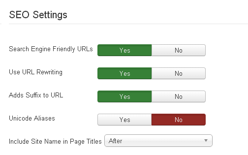

Remove Category and Article ID from URL in Joomla 3
2015-10-01 by Vincent PingThis site has moved to a web site static generator to manage the content, and here is just a backup for reference.
Problem
I installed Joomla 3.4.4 on my vincentping.com site.
After created some categories and articles, I just wanna try the "SEO Settings" in the "Global Configuration".
I set the options to: Search Engine Friendly URLs - Yes, use URL Rewriting - Yes, Adds Suffix to URL - Yes, just as following:

When I viewed the site, the article URL is like this:
http://www.vincentping.com/9-blog/2-remove-category-article-id-from-url-in-joomla-3.html
It's ok comparing with the original URL like this:
http://www.vincentping.com/index.php?option=com_content&view=article&id=2:remove-category-article-id-from-url-in-joomla-3&catid=9
But the id numbers before the categoriy(here it's 9) and article(2) are not very nice. Obviously these numbers are some database item number, with them the scripts could fetch data from backend database more efficiently. But to visitors they're a little strange. So I googled the web and tried lots of suggestions from web, finally here is the solution I used.
The Solution
-
Open the php file under the Joomla root “components/com_content/router.php“,
-
Search for the code:
$advanced = $params->get('sef_advanced_link', 0); -
Just change the "0" to "1", the output is as this:
$advanced = $params->get('sef_advanced_link', 1);There're two lines of code in the file should be changed.
-
Find below section of code in the router.php file and comment it out:
if (strpos($segments[0], ':') === false) { $vars['view'] = 'article'; $vars['id'] = (int) $segments[0]; return $vars; }comment to
/* if (strpos($segments[0], ':') === false) { $vars['view'] = 'article'; $vars['id'] = (int) $segments[0]; return $vars; } */
And all the job is DONE!
After that, the url for the page is now:
http://www.vincentping.com/en/remove-category-article-id-from-url-in-joomla-3.html
Remember: every time you upgrade your Joomla system, you should modify the code again.
Other Suggestions You can Try
From the research online, I know that the id number issues are a problem for Joomla User Groups for near 10 years. And there's lots of extensions and other methods we could try.
- Use SEF extensions such as Sh404SEF, JoomSEF, SEF Advance etc, you can search "SEF" on JED(Joomla! Extensions Directory) and try them, but most of them are paid extensions.
- If you're familar with regex rules, you may try to add some rules to the .htaccess and try to rewrite the URL. But as we know, the .htaccess gets some overhead.
- When you just have a very small site, there's limited articles there, you could create one menu item for each article, and the id issues are solved.
If you want to research more, I recommend the post "Remove article id from url for joomla 3.0" on the Offical Joomla Forum.